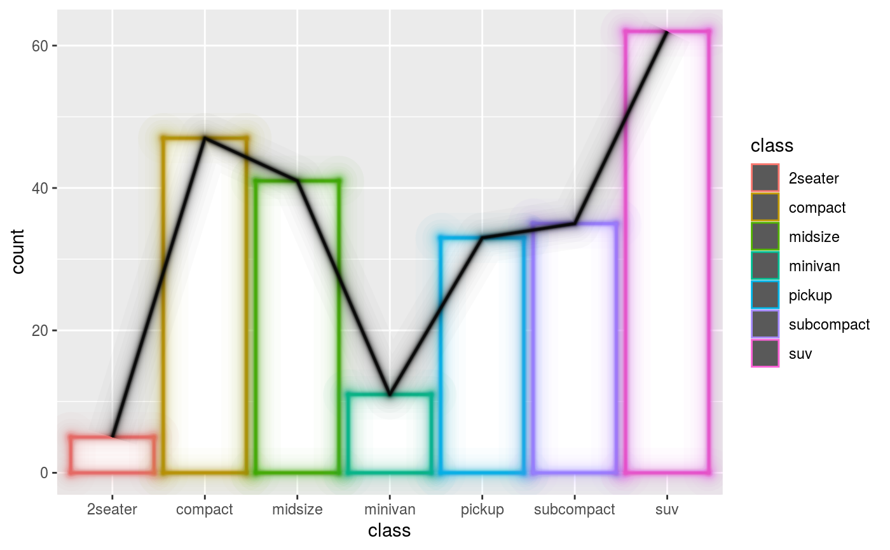
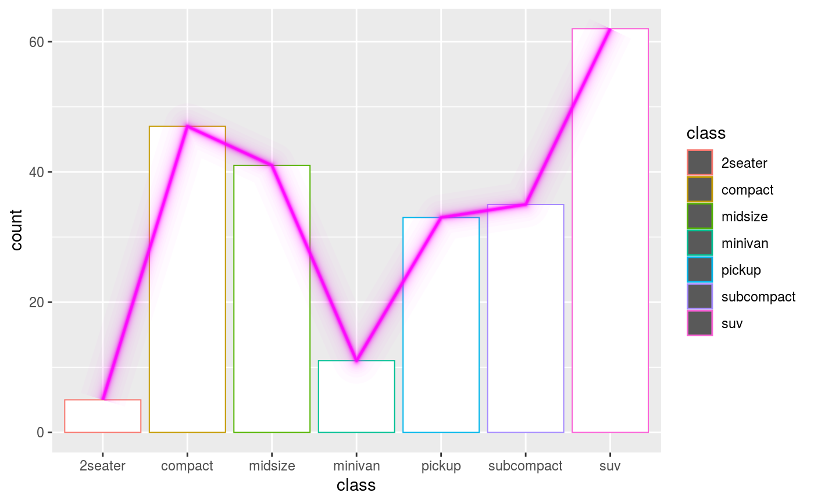
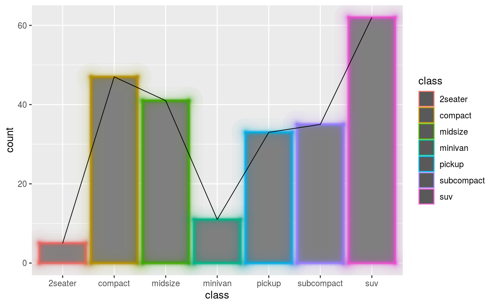
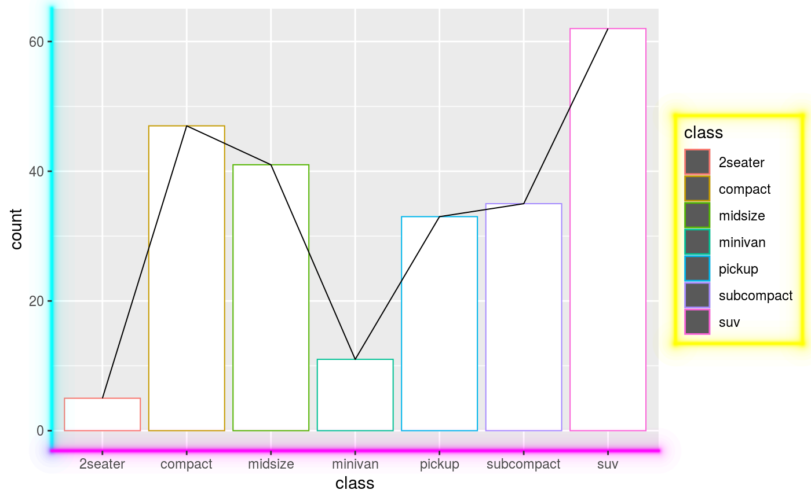

Makes copies of lines with increasing size and decreasing alpha, giving an glowing appearance. The functions are used in the following way:
glow()is a function factory that produces a function that is subsequently used in elements to make lines glow
element_rect_glow(), element_line_gloware convenience
wrappers around element_*_seq() that pass down the function
generated by glow().
glowing_geoms()is a convenience theme setter for the
elementalist.geom_rect and elementalist.geom_line elements.
glow(amount = 3) element_line_glow(amount = 3, ...) element_rect_glow(amount = 3, ...) glowing_geoms( amount = 3, fill = NULL, colour = NULL, size = NULL, linetype = NULL, color = NULL, lineend = NULL, sides = "tlbr", n = 50 )
| amount | A |
|---|---|
| ... | Arguments passed to |
| fill | Fill colour. |
| colour | Line/border colour. Color is an alias for colour. |
| size | Line/border size in mm; text size in pts. |
| linetype | Line type. An integer (0:8), a name (blank, solid, dashed, dotted, dotdash, longdash, twodash), or a string with an even number (up to eight) of hexadecimal digits which give the lengths in consecutive positions in the string. |
| color | Line/border colour. Color is an alias for colour. |
| lineend | Line end Line end style (round, butt, square) |
| sides | A |
| n | An |
For glow(), a function.
For element_rect_glow(), an element_rect_seq type list.
For element_line_glow(), an element_line_seq type list.
For glowing_geoms, a partial theme object.
When the elements have no colours by setting them to NA, this
will not draw glowing lines, as is to be expected.
Due to the way glowing lines are constructed, having non-solid linetypes may lead to awkward results.
Other theme styles:
multicolour(),
wiggle()
barplot <- ggplot(mpg, aes(class)) + geom_bar_theme(aes(colour = class)) + geom_line_theme(stat = "count", aes(group = -1)) # Making geoms glow barplot + glowing_geoms()# Making only line geoms glow barplot + theme(elementalist.geom_line = element_line_glow(colour = "magenta"))# Making only rect geoms glow barplot + theme(elementalist.geom_rect = element_rect_glow(fill = "grey50"))# Let other theme elements glow barplot + theme( axis.line.x = element_line_glow(colour = "magenta"), axis.line.y = element_line_glow(colour = "cyan"), legend.background = element_rect_glow(colour = "yellow") )